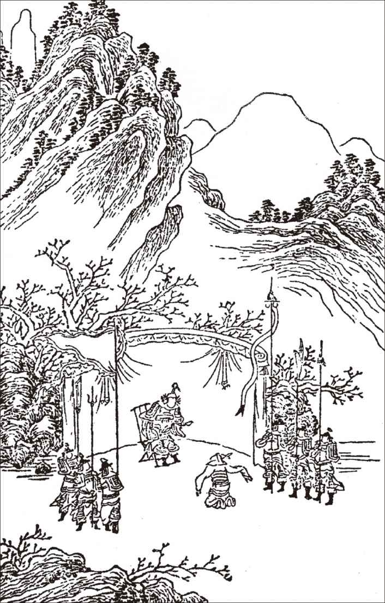

第十五出 西谍
（净外扮将军上）台上霜威凌草木，军中杀气傍旌旗
[1]
。我们河西节度使府中副将是也。大都督卢爷升帐，在此伺候。
【金珑璁】
（生引众上）
河陇逼西番，为兵戈
大将伤残。争些儿
撞破了玉门关。君王西顾切，起
关东挂印登坛，长剑倚天山。
［集唐］三十登坛众所尊，红旗半卷出辕门。前军已战交河北，直斩楼兰报国恩
[2]
。我卢生，自陕州而来，因河西大将王君奐与吐番战死，河陇动摇，朝廷震恐，命下官挂印征西。兵法云：臣主和同，国不可攻。我欲遣一人往行离间，先除了悉那逻丞相，则龙莽势孤，不战而下，此乃机密之事也。访的军中有一尖哨
[3]
，叫做打番儿汉，讲得三十六国番语，穿回入汉，来去如飞。早已唤来也。
【北绛都春】
（旦扮小军插旗上）
莽乾坤一片江山，千山万水分程限。偏我这产西凉，直着边关。也是我野花胎，这头分瓣。
（见介生）呀，你便是打番儿汉。你可打的番？通的汉？
[4]
【混江龙】
（旦舞介）
打番儿汉，俺是打番儿汉，哨尖头有俺的正身迭办
[5]
。（生）祖贯是羌种，汉儿种？（旦）
祖贯南番，到这无爷娘田地甘凉畔，顺风儿拜别了闷摩山
[6]
。你收了这小番儿在眼，一名支数口粮单
[7]
。小番儿身才轻巧，小番儿口舌阑番
[8]
。小番儿曾到羊同党项
[9]
，小番儿也到那昆仑白阑
[10]
。小番儿会吐鲁浑般骨都古鲁，小番儿会别失巴的毕力班阑。小番儿会一留咖喇的讲着铁里，小番儿也会剔溜秃律打的山丹
[11]
。但教俺穿营入寨无危难，白茫茫沙气寒。将一领荅思叭儿头毛上按，将一个哨弼力儿唇绰上安
[12]
。敢则是夜行昼伏，说甚么水宿风餐。（生）养军千日，用在一朝。我今日有用你之处，你可去得？（旦）
止不过敲象牙，抽豹尾，有甚么去不得也那颜
[13]
。（生）如今吐番国悉那逻丞相足智多谋，为我国之害。要你走入番中，做个细作，报与番王，只说悉那逻丞相因番王年老，有谋叛之意，好歹教那番王害了他。你去得，去不得？（旦）
这场事大难大难，你着俺行反间，向刀尖剑树万层山。你教俺赸也不赸
[14]
？顽也不顽？太师呵，你教俺没事的 人反
[15]
，将何动惮
[16]
？着甚么通关？（生）但逢着番兵，三三两两传说去：“悉那逻丞相谋反。”自然彼中疑惑，要甚么通关呢？（旦）
天也，你教俺两片皮把镇胡天的玉柱轻调侃，三寸舌把架瀚海金梁倒放番
[17]
，俺其实有口难安。（生）既然流言难布，我有一计：千条小纸儿写下“悉那逻谋反”四大字，到彼中遍处黏贴，方成其事。（旦）此计可中。
则将这纸条儿，纸条儿窣地的庄严看
[18]
。呀，一千个纸条儿，拿着怎好？（生想介）便是俺有计了，打听番中木叶山下，一道泉水，流入番王帐殿之中。给你竹签儿一片，将一千片树叶儿，刺着“悉逻谋反”四个字，就如虫蚁蛀的一般，上风头放去，流入帐下。他只道天神所使，断然起疑。此乃“御沟红叶”之计也
[19]
。（旦）
妙哉、妙哉！须不比知风识水俏红颜，倒使着寒江枫叶丹。你道滩也么滩，透燕支山外山
[20]
。小番儿去也。（生）赏你一道红，十角酒，三千贯晌钞
[21]
，买干粮馍馍去。成事，赏你千户告身
[22]
。（旦）
怀揣着片醉题红锦囊出关，扑着口，星去星还
[23]
。到木叶河湾，则愿迟共疾央及煞有商量的流水潺颜
[24]
，好和歹掇赚他没套数的番王着眼
[25]
。
人反
[15]
，将何动惮
[16]
？着甚么通关？（生）但逢着番兵，三三两两传说去：“悉那逻丞相谋反。”自然彼中疑惑，要甚么通关呢？（旦）
天也，你教俺两片皮把镇胡天的玉柱轻调侃，三寸舌把架瀚海金梁倒放番
[17]
，俺其实有口难安。（生）既然流言难布，我有一计：千条小纸儿写下“悉那逻谋反”四大字，到彼中遍处黏贴，方成其事。（旦）此计可中。
则将这纸条儿，纸条儿窣地的庄严看
[18]
。呀，一千个纸条儿，拿着怎好？（生想介）便是俺有计了，打听番中木叶山下，一道泉水，流入番王帐殿之中。给你竹签儿一片，将一千片树叶儿，刺着“悉逻谋反”四个字，就如虫蚁蛀的一般，上风头放去，流入帐下。他只道天神所使，断然起疑。此乃“御沟红叶”之计也
[19]
。（旦）
妙哉、妙哉！须不比知风识水俏红颜，倒使着寒江枫叶丹。你道滩也么滩，透燕支山外山
[20]
。小番儿去也。（生）赏你一道红，十角酒，三千贯晌钞
[21]
，买干粮馍馍去。成事，赏你千户告身
[22]
。（旦）
怀揣着片醉题红锦囊出关，扑着口，星去星还
[23]
。到木叶河湾，则愿迟共疾央及煞有商量的流水潺颜
[24]
，好和歹掇赚他没套数的番王着眼
[25]
。
（生）你道叶儿上写甚来？

【北尾】
无笔仗指甲里使着木刀钻，有灵心似虫蚁儿猛把书文按。怎题的汉宫中无端士女愁？则写着锦番邦悉那逻丞相反。
（下）（生）番儿去的猛，此事必成。但整理兵马，相机而进。
贤豪在敌国，反间为上策。
目睹捷旌旗，耳听好消息。
注释：
[1]
“台上”二句：出自岑参《九日使君席奉饯卫中丞赴长沙》：“节使横行西出师，鸣子擐甲羽林儿。台上霜风陵草木，军中杀气傍旌旗。”
[2]
“三十登坛众所尊”四句：三十登坛众所尊，出自刘长卿《献淮甯军节度使李相公》；“红旗半卷出辕门、前军已战交河北”二句，出自王昌龄《从军行》。辕门，指将帅所在的门。交河，即洮河，在甘肃省境内；直斩楼兰报国恩，出自张仲素《塞下曲》。楼兰，古代西域名，在新疆若羌县境内。
[3]
尖哨：古代负责担任警戒和侦察的士兵。《明史·兵志》：“又十选一，立尖哨五百骑，厚其月糈。”
[4]
打的番、通的汉：会通番、汉之语，亦能通番、汉之风俗。
[5]
正身迭办：身份证明文件。正身，指确指本人，非冒名若夫。迭办，办理、筹措。
[6]
闷摩山：又名闷摩黎、紫山，即巴颜喀拉山。蒙古语的意思是“富饶青色的山”。位于青海省中部偏南。
[7]
粮单：粮饷。
[8]
阑番：亦作“澜翻”，比喻能说会道。陆游诗：“功名蹭蹬心常在，筹策澜翻舌辞存。”
[9]
羊同、党项：古族名，羌人的一支。羊同，分布于今西藏西北部。唐贞观初年曾朝贡于唐，不久为吐蕃所并。党项，分布于青海省东南部和四川省西北部一带，唐前期，吐蕃征服青藏高原诸部族后，大部分党项人被迫徙于甘肃、宁夏、陕北一带，北宋时建立了以党项人为主体的西夏政权。
[10]
昆仑、白阑：山名。昆仑，昆仑山。白阑，即贺兰山。据《元和志》：“山树棈白，望如马为贺兰，故名。”
[11]
“小番儿会”四句：句中的“骨都古鲁、毕力班阑、一留咖喇，溜秃律打”等，均为音译的少数民族语言。吐鲁浑、别失巴、铁里、山丹则为古族名或地名。
[12]
荅思叭儿：波斯语，头巾之类的饰物。哨弼力儿：髭鬚。
[13]
那颜：蒙古语“长官、老爷、大人”的意思。亦作“诺延”、“那延”、“那演”。《明史·列传·刘源清传》：“‘那颜’者，华言大人也。”
[14]
赸（shàn）：走开、离去。嘉庆年间修《东台县志》：“既去而之曰赸。”
[15]
：打趣，挑唆。
[16]
动惮：动作，活动。
[17]
镇胡天的玉柱、架翰海金梁：元杂剧中经常出现的，比喻国家的栋梁。
[18]
窣（sù）：突然从洞里钻出来，引申为纵越。宋孔平仲《谈苑》：“如闭目窣身入水，顷刻间耳。”
[19]
御沟红叶：唐《云溪友议》卷十载唐宣宗时，舍人卢渥从御沟中拾到一片红叶，上面有绝句一首，他就藏在箱子里。后来宣宗放宫女嫁人，卢渥所择宫女恰好是题诗人，当时不知。成婚后，宫女在箱子里发现红叶，卢渥方知题诗人就是他的妻子。
[20]
透燕支山：流过燕支山。
[21]
“一道红”三句：比喻赏赐很多。一道红，一匹红色的绸缎。十角酒，角为古代盛酒器，两端翘起，似两只角。三千贯响钞，响钞指银子和铜钱，是相对于纸钞而言的。
[22]
千户告身：千户是官名。宋元明卫所掌兵千人的武官名。《宣和遗事》：“掌骑吏千户，姓幽西，名骨碌都。”元置大都督府，管辖三卫二府。卫、府都有千户所，有行军千户、守城千户、钦察千户等名称。告身，委任官职的文书。明王世贞《委宛余编》：“唐时将相告身用金花五色绫纸，至宋则用织成花绫，以品次有差。”又：“至国朝，考最始给予一品至五品皆诰，六品以下敕，花殊异。”
[23]
“扑着口”句：蒙着嘴速去速回。夜行军时，用布将口蒙住，以免发出声音。
[24]
央及煞：请求、恳求之意。潺颜：流水的声音。
[25]
掇赚：哄骗、哄弄。《水浒传》第六十回：“久闻梁山泊行仁义之道，所过之处，并不扰民，因此特来拜投，如何故来掇赚将军？”套数：原为戏曲和散曲术语。此处指缺乏谋略。
评析：
《西谍》又名《打番儿》、《打番》、《番儿》，写卢生使用反间计，派一名尖哨儿，利用类似中国古代“御沟红叶”的方式，用竹签将“一千片树叶儿，刺着‘悉逻谋反’四个字，就如蚁蛀的一般，上风头放去，流入帐下”，离间吐蕃国赞普与丞相悉那逻，为其开边扫除了障碍。此计相当狠毒，亦相当高明。据近人董康《曲海总目提要》：“小番作间，盖借用种世横使王嵩间野事，事载《琼花梦后》。”可见，其事有所本。
此出戏在昆曲舞台上常演不衰。一方面是因为剧情的原因，本来军营中的谋略战事，是一件非常紧张严肃的事情，但是作者通过打番儿汉的表演，做到了松紧结合，错落有致。另外一方面是因为曲词中洋溢着一种异域风光和情趣。由于打番儿的装扮、语言以及身世与中原地区完全不同，能够满足人们对异域风情的好奇之心：“小番儿会吐鲁浑般骨都古鲁，小番儿会别失巴的毕力斑阑。小番儿会一留咖喇的讲着铁里，小番儿也会剔溜秃律打的山丹。”且剧中打番儿汉是由“旦”来扮演，“旦扮小军插旗上”、“旦舞介”等，边唱边舞，排场非常可观。我们从清杨懋建《丁年玉筍志》中对《打番儿》在舞台上的描绘，可看出演出时的场景：“爱龄，字小香，亦后来之秀也。演《邯郸梦》为打番儿汉，绯缨绣结，束为急装，舞双枪如梨花因风而起。”演起来很好看。